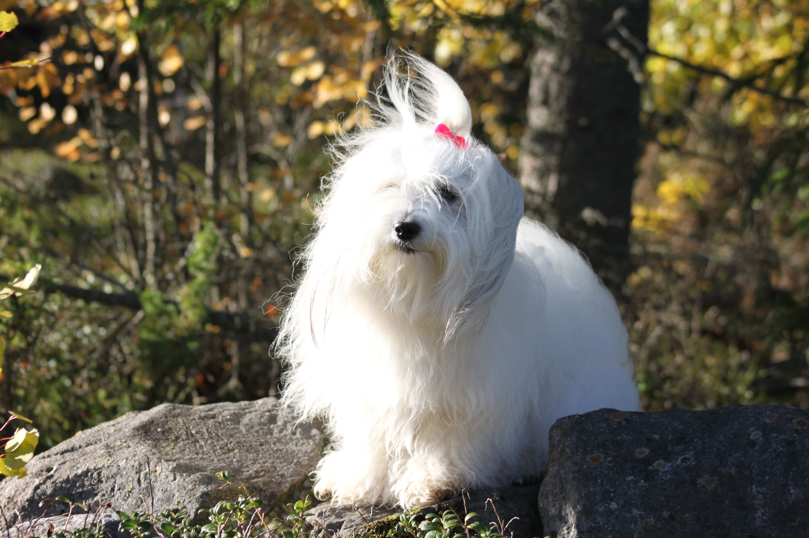
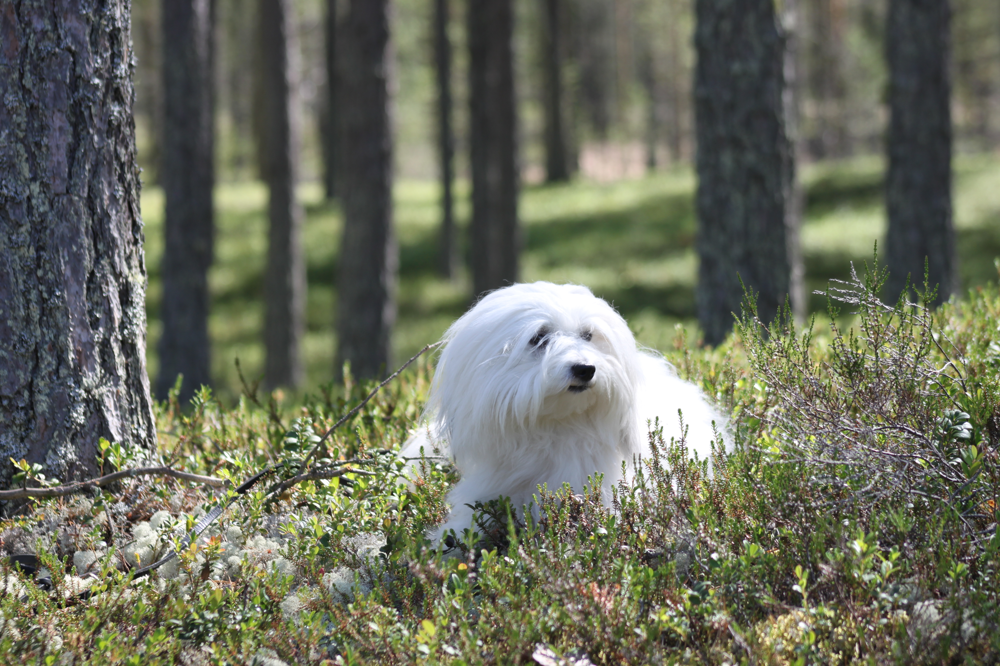

Coton de tulear
Coton de tulear on pieni, iloinen ja seurallinen koirarotu, joka on lähtöisin Madagaskarilta. Coton de tuléar on yleisesti ottaen varsin terve rotu. Coton de Tuléarin nimi tulee ranskankielisestä sanasta ”coton”, joka tarkoittaa puuvillaa, ja viittaa sen upeaan valkoiseen turkkiin.
Historia
Bichon-rotuihin kuuluva coton de tuléar seurakoira, jonka juuret ulottuvat aina 1600-luvulle Madagaskarin saarelle. Coton oli saaren kuninkaallisten koira, ja vasta 1900-luvulta alkaen ovat tavalliset ihmiset saaneet omistaa cotonin. Coton on yksi harvoista afrikkalaisista koiraroduista, ja on edelleen tänä päivänä suosiossa. Suomessa rotu on vielä melko nuori, sillä ensimmäinen pentue maassamme syntyi vuonna 1990.

Luonne
Cotonit ovat sosiaalisia,iloisia ja älykkäitä ilopillereitä. Aina hyväntuulinen coton saa ihmisensä hymyilemään huonoimpanakin päivänä. Älykkyytensä ansiosta cotonit oppivat nopeasti erilaisia temppuja ja kietovat helposti perheensä pienen tassunsa ympärille. Tämä pörröinen kaveri tarvitseekin johdonmukaisen ja selkeän kasvatuksen rajoineen siinä missä isommat lajitoverinsakin. Coton on pieni-suuri koira suloisine suklaasilmineen ja kauniine puuvillaturkkeineen. Valppautensa ansiosta coton yleensä ilmoittaa vieraiden saapumisesta innokkaasti haukkumalla, mutta lopettaa pian vieraat tervehdittyään.
Helpon koulutettavuutensa, ketteryytensä, kestävyytensä sekä aktiivisuutensa ansiosta cotonin kanssa voi harrastaa monipuolisesti eri lajeja. Opittuja taitojaan cotonit esittelevät mielellään. Coton de tuléar tunnetaankin koiramaailman klovnina, jonka seurassa ei pääse ikävystymään.
Joiltakin cotoneilta löytyy jonkin verran saalisviettiä, joten irti pidettynä alue tulisi olla koiraturvallinen.

Turkki
Turkki on cotonin ylpeys ja katseenvangitsija. Turkki pysyy kauniina säännöllisellä hoidolla, joka aloitetaan jo pentuna, jotta koira ja omistaja molemmat tottuvat turkin hoitoon. Cotonin turkin hoito vaatii aikaa, säännöllisyyttä ja järjestelmällisyyttä sekä kunnolliset välineet ja hyvät aineet. Aikuinen coton pestään ja kuivataan noin 1-2 viikon välein riippuen turkin laadusta. Pentuturkin vaihtuessa aikuisen koiran turkkiin saattaa pesukertoja kertyä useampi viikossa. Kasvattaja opastaa pennun ostajan turkin hoitoon. Lisäksi rotuyhdistys on perustanut cotonin omistajien avuksi TurkkiHelpin, joka auttaa ja opastaa turkinhoitoon liittyvissä asioissa eri puolilla Suomea.

Terveys
Yleisimmät asiat terveydestä Coton de tuléar on pitkäikäinen koira, keskimääräinen elinikä on yli 10 vuotta. Rodussa on tavattu paljon koiria, jotka ovat saavuttaneet yli 14 vuoden iän. Jopa 17- ja 18-vuotiaita cotoneita on ollut useita. Rodussa on yli 10-vuotiaita koiria, jotka ovat olleet täysin terveitä koko ikänsä. Perinnöllisiä sairauksia on todettu suhteellisen vähän.
Rokotusten ja terveystarkastusten sekä hammashoitojen lisäksi ei keskimääräisille cotoneille kovin paljon eläinlääkärikäyntejä elämänsä aikana kerry. Kyselytietojen perusteella koirilla on jonkin verran herkkämahaisuutta, erilaisia allergioita, iho- ja korvatulehduksia, selkä- sekä polvivaivoja. Ihan vanhuusikää lukuun ottamatta koiran elämänlaatuun vaikuttavia sairauksia esiintyy kuitenkin melko pienellä osalla cotoneita. Valitettavasti, kuten missä tahansa rodussa, on yksilöitä, jotka sairastavat paljon, jopa erilaisia sairauksia.
koirilla on taipumusta hammaskiven muodostukseen. Säännöllinen hampaiden puhdistus on sen vuoksi tärkeää. Jos koiran hampaat harjataan päivittäin, säästytään eläinlääkärillä tehtäviltä hammaskiven poistoilta useimmiten kokonaan.
Coton de tuléarien PEVISA-ohjelmalla seurataan silmien ja polvien tilaa. Terveyden edistämisen avuksi on tullut geenitestejä, jotka ovat rodussa vapaaehtoisia.